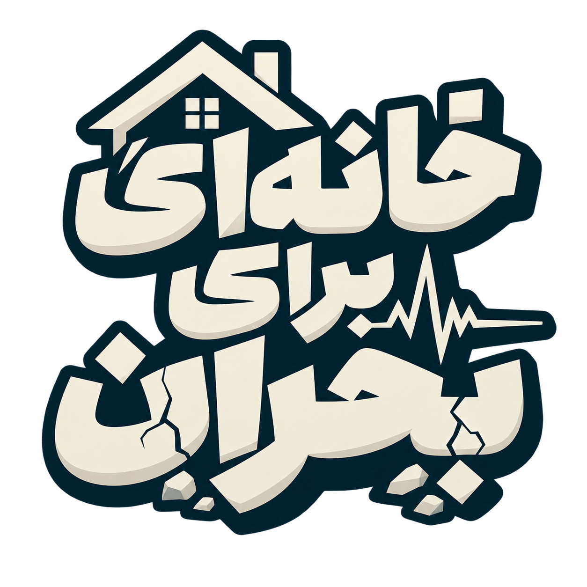
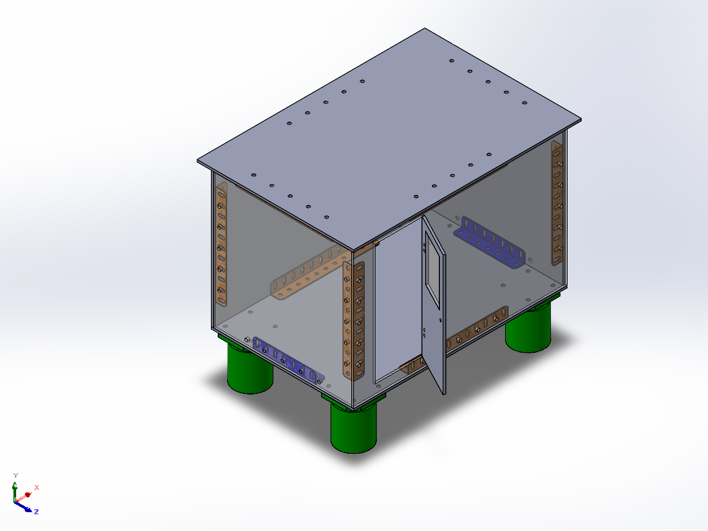
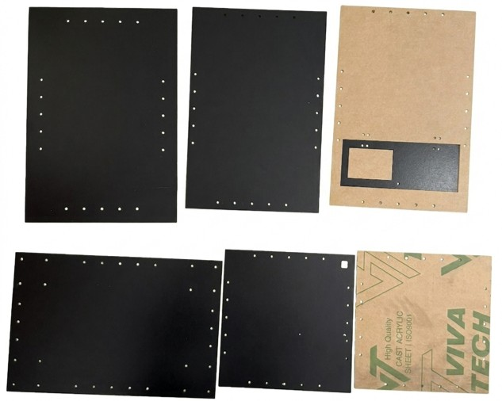
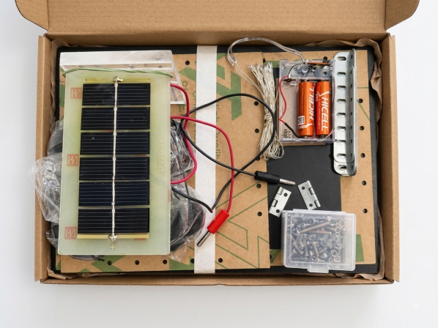
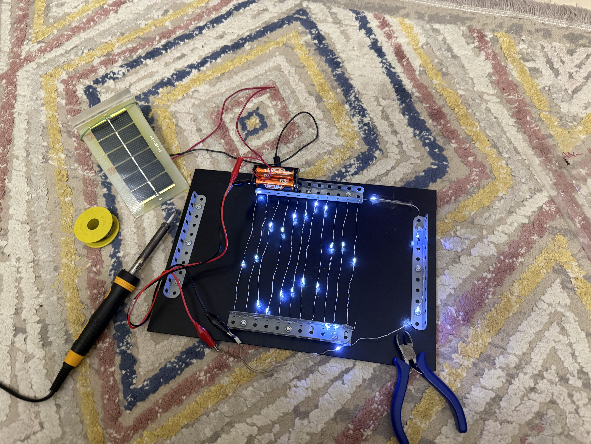
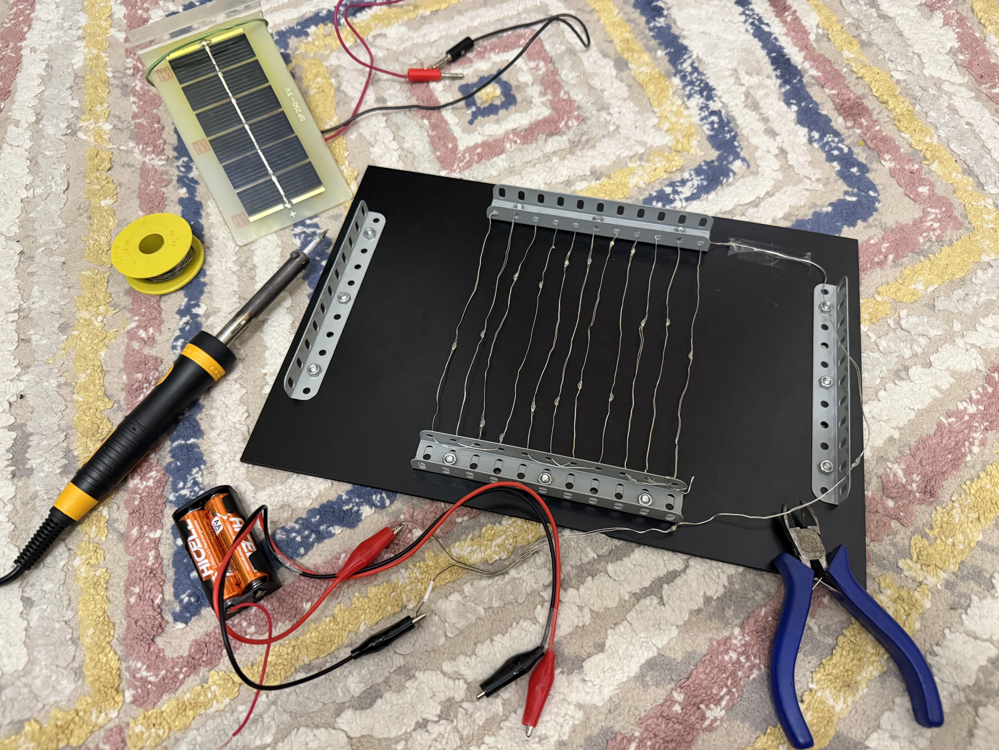
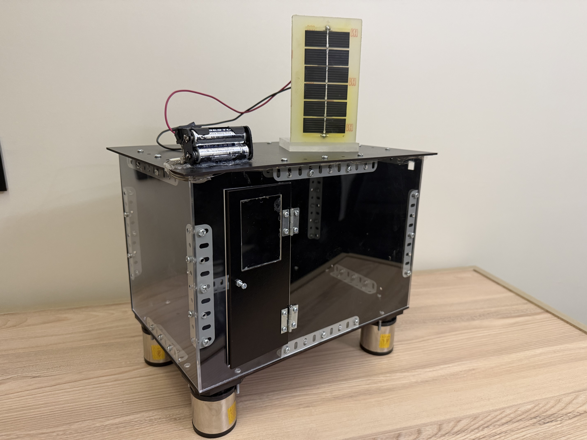
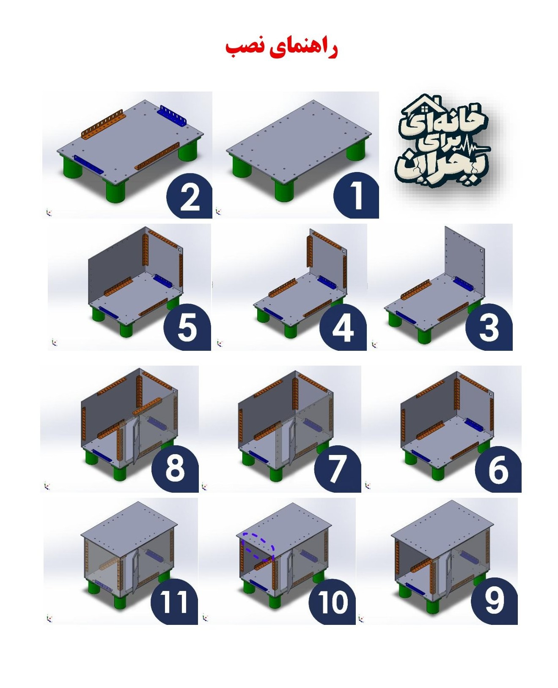

خانهای برای بحران
سمینار ۴۰، مدرسه راهنمایی علامه حلی ۱ تهران
مانی زمزمی

سمینار ۴۰، مدرسه راهنمایی علامه حلی ۱ تهران
مانی زمزمی
پروژه «خانهای برای بحران» 🏠 در واقع یک خانهی پیشساخته و قابل حمل است که برای شرایط بحرانی مثل زلزله و مناطقی که نیاز به اسکان سریع دارند طراحی شده است. 🚨 ایدهی اصلی این است که خانه بهجای اینکه بهصورت یکپارچه ساخته شود، از قطعات جدا تشکیل شده باشد و در محل موردنظر سرهم شود. این کار باعث میشود تعداد بیشتری از این واحدها در یک کامیون قابل حمل باشند 🚛 و هزینه و دشواری حملونقل هم کاهش پیدا کند. یکی از ویژگیهای مهم این طرح این است که برای نصب، به جرثقیل یا فونداسیون و زیرسازی معمولی نیاز ندارد؛ پایههای قابل تنظیم آن امکان استقرار سازه را حتی روی زمینهای شیبدار، سنگی و ناهموار فراهم میکنند. از طرف دیگر، برق موردنیاز آن با پنل خورشیدی تأمین میشود ☀️🔋؛ بنابراین برای استفاده از آن نیازی به اتصال به شبکهی برق شهری نیست. در واقع این طرح چیزی بین چادرهای امدادی ⛺ و خانههای پیشساختهی معمولی است؛ یعنی از چادرهای امدادی مقاومتر و مجهزتر، اما در مقایسه با خانههای پیشساختهی سنگین، حمل و نصب سادهتر و کمهزینهتری دارد. در پایان نیز یک نمونه از سازه ساخته میشود 🔧 تا مواردی مانند استحکام، سهولت مونتاژ و عملکرد سیستم تأمین انرژی خورشیدی مورد بررسی قرار بگیرند. البته نمونهی ساختهشده در ابعاد کوچکتر از اندازهی واقعی خانه خواهد بود و در واقع یک مدل کوچکشده از سازه محسوب میشود
در مرحله نخست، تمامی قطعات موردنیاز پروژه بهصورت جداگانه و با دقت در نرمافزار سالیدورکس طراحی و مدلسازی شدند. در این مرحله، ابعاد و ویژگیهای هندسی هر یک از قطعات مطابق با طرح و نیاز پروژه در نظر گرفته شد تا از صحت و هماهنگی آنها اطمینان حاصل شود. پس از تکمیل طراحی قطعات، مدلهای ایجادشده در محیط اسمبلی کنار یکدیگر قرار گرفتند و فرایند مونتاژ کردن مجموعه آغاز شد. در این محیط، قطعات با استفاده از قیدها و روابط مناسب در موقعیت صحیح نسبت به یکدیگر قرار گرفتند تا مجموعه نهایی شکل بگیرد. در پایان نیز نحوه قرارگیری و هماهنگی قطعات با یکدیگر بررسی شد تا از صحت ساختار مجموعه و مطابقت آن با طراحی اولیه اطمینان حاصل شود.

در ابتدا، نقشههای دقیق و موردنیاز برای برش قطعات با فرمت دی ایکس اف طراحی و آمادهسازی شدند. در این مرحله، ابعاد و اندازههای قطعات با توجه به طراحی اولیه و مقیاس موردنظر تعیین شد تا برشها با دقت و کمترین میزان خطا انجام شوند. پس از تکمیل و بررسی نقشهها، فایلهای طراحیشده به دستگاه برش لیزر منتقل شدند و هر یک از قطعات بهصورت جداگانه و مطابق با ابعاد مشخصشده برش داده شدند.
قطعات این سازه از دو جنس چوب و پلکسیگلاس ساخته شدهاند و ضخامت هر دو نوع قطعه ۲٫۸ میلیمتر در نظر گرفته شده است. همچنین، تمامی ابعاد سازه با رعایت مقیاس ۱:۱۰ طراحی و اجرا شدهاند تا تناسب میان قطعات و ابعاد کلی سازه حفظ شود. در نهایت، پس از اتمام عملیات برش، قطعات آمادهی مرحله مونتاژ و سرهمبندی سازه شدند.

قطعات در حالت بهینه بسته بندی شده اند.




